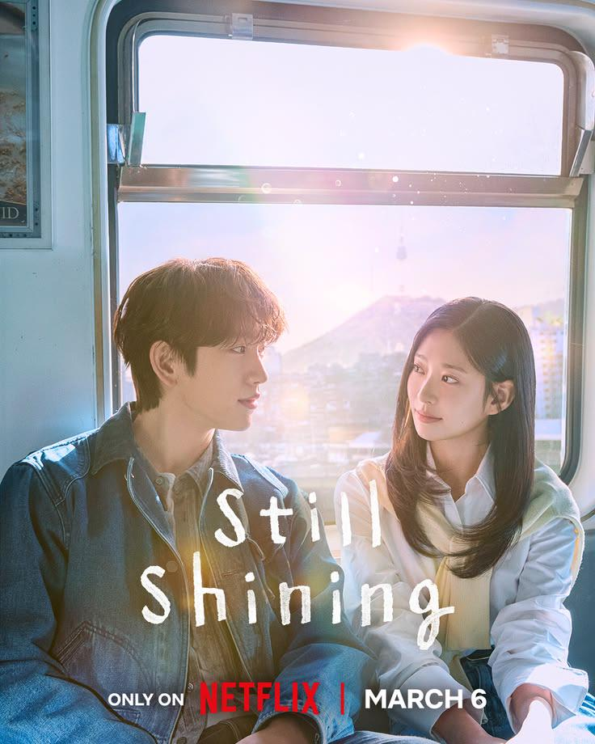

⭐️⭐️⭐️
I will try to keep spoilers to a minimum, but I will say that this drama includes a time jump. Beginning this show, I knew that it would be a bit different from content I typically enjoy. I usually like to watch romantic comedies, fantasies, and genres that really take me out of reality. However, what's special about this drama is that it offers a more grounded and emotional narrative, exploring the complexities of relationships and personal growth. I would say that my favorite parts of the show are when the main characters are still in their teens. Being able to see the main couple learn more about each other and develop their feelings for one another was just very heartwarming. I also like the idea of a small town and the way scenes were filmed with lots of greenery and amazing countryside views and views of a small town. As someone who grew up in the city, I want to experience a small town vibe and slower days, and this show kind of puts me there. After the time jump, the main characters reunite 10 years later in the bustling city of Seoul and rekindle their relationship they started as young adults. I think this portion of the show really highlights real-life experiences and depicts the ups and downs of grown up relationships. The quote I included below was from the beginning of the show. It is mentioned again later on in the story when the couple reunites but I think that concept is a main part of the story the writers are trying to share. Overall, I gave this show a rating of 3/5 stars. I took away some points for after the time jump. As I mentioned, I really enjoyed the small town vibe but in order to better display their growths as people over time, it's natural to put them in a different setting, especially one that contrasts with their rural upbringing. This change in environment does serve a purpose, but I found myself missing the charm of the countryside as the story progressed. Additionally, I found that there was too much back and forth between the attitude of the female lead. I understand that emotions are complex and that people can have mixed feelings, but I found myself getting frustrated with the indecisiveness. In the end, it was a short and sweet show about first love. I also really enjoyed the acting of Kim Minju, who is a former member of the girl group IZ*ONE. She retired from the music industry to pursue acting and I think she did a great job in this show. I look forward to seeing more of her work in the future!
"My grandparents and [brother] are precious to me, so I want to help them from a distance. When I'm too close, I burn out easily."